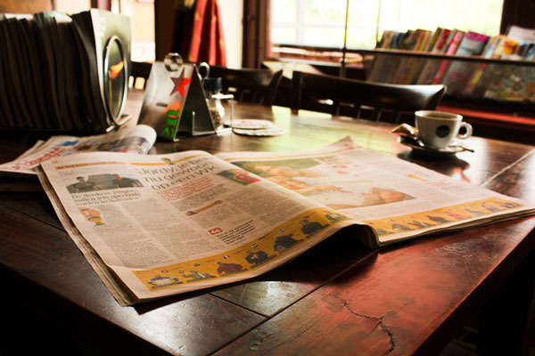
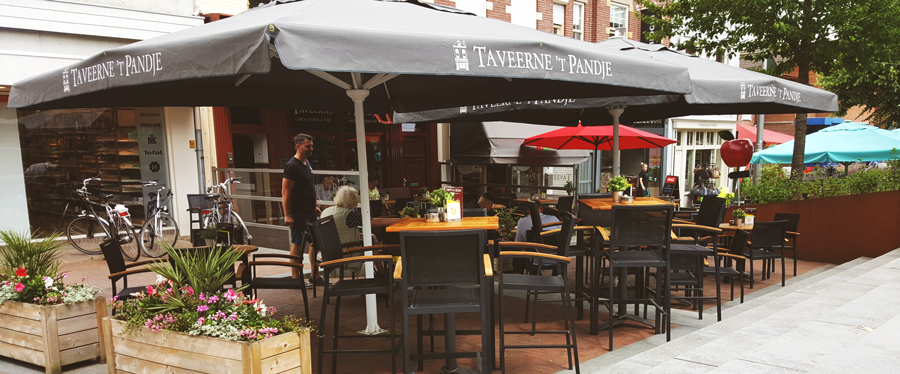
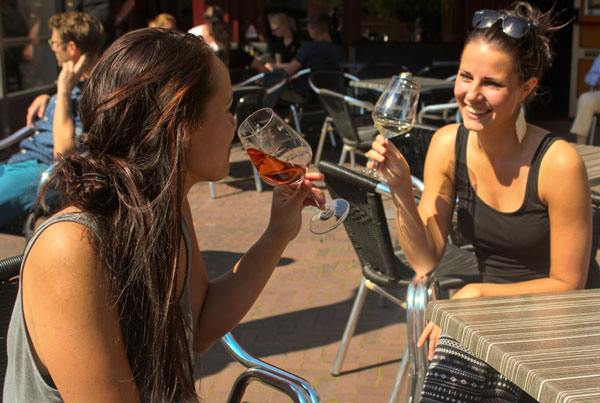
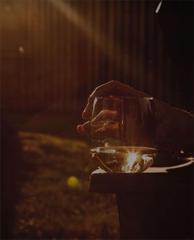
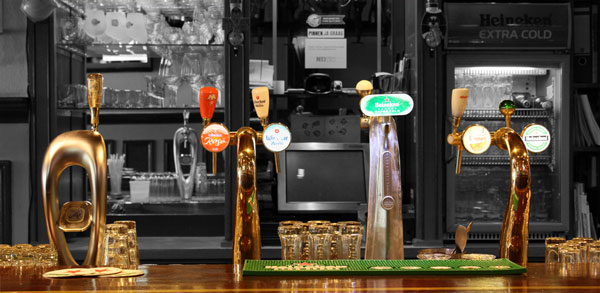
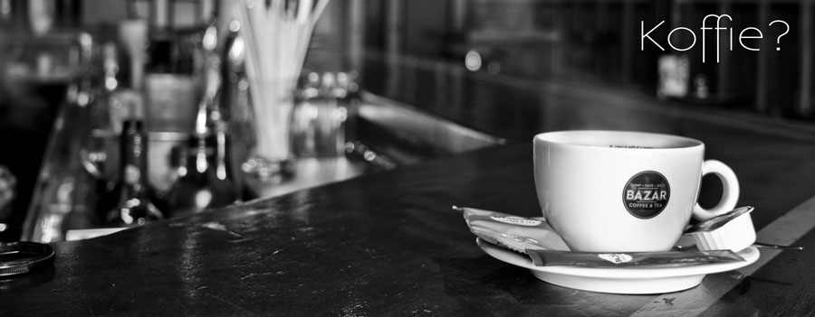

Lunch
Van 12:00 tot 14:00
Een eenvoudig broodje kroket of een uitsmijter? Of een meer verfijnde bol met zalm? Ga rustig zitten, met een verse jus d'orange of een kopje koffie en onze gratis krant.
Naar de lunchkaart
Het café aan het Marktplein in Geldermalsen. Een goede lunch, een eersteklas kop koffie en een goed getapt biertje, binnen aan de messing bar of buiten op het terras.
Openingstijden: di 12–19, wo en do 12–00, vr 7:30–02, za 12–02

Van 12:00 tot 14:00
Een eenvoudig broodje kroket of een uitsmijter? Of een meer verfijnde bol met zalm? Ga rustig zitten, met een verse jus d'orange of een kopje koffie en onze gratis krant.
Naar de lunchkaart
Borrelkaart van 14:00 tot 19:00
De vrijdagmiddagborrel: de week de week laten en met alle collega's het weekend inluiden. Een biertje, een wijntje, een bittergarnituur of een blokje kaas.
Naar de borrelkaart
Een eenvoudige, smakelijke dinerkaart
Heerlijk dineren? Geen probleem. Een saté of een lekkere hamburger, met zorg bereid, in onze landelijke en ongedwongen ambiance.
Bel 0345 576 597
Onze messing bar biedt onderdak aan een aantal heerlijke tapbieren. Natuurlijk het onvolprezen Heineken, maar ook de Heineken Extra Cold en een wisselend aanbod speciaalbieren direct van de tap. Regelmatig schenken we ook seizoensbieren.
Sinds 2007 doen we mee aan het Heineken 'Goed getapt'-programma: ons barpersoneel heeft de cursus gevolgd. Een biertje bij 't Pandje heeft dus gegarandeerd de perfecte schuimkraag en wordt met zorg geserveerd.
Bekijk de bierkaart
Geniet, ontspan en beleef.
Vier uw verjaardag, trouwdag, jubileum of andere gelegenheid in Taveerne 't Pandje, of op een door u gekozen locatie, zonder dat u zich zorgen hoeft te maken over de vaat of de catering. Een compleet buffet, speciale gerechten (bijvoorbeeld in verband met allergieën) of gewoon een borrel met een hapje: we denken mee en zorgen voor een gezellige tijd met familie, vrienden of collega's.
Bel of mail ons, of kom even langs om uw wensen te bespreken onder het genot van een kopje koffie. Uiteraard met de complimenten van 't Pandje.
Gemak dient de mens.
Op de zaak of tijdens een vergadering wilt u bezig zijn met waar u goed in bent, niet met randzaken. Wij bieden een ruime selectie broodjes en andere (warme) lunchgerechten, gewoon bij u op de zaak bezorgd. Kant-en-klaar, en maatwerk kan natuurlijk ook.
Bel ons, mail ons of loop gewoon eens binnen, we vertellen u graag meer over de mogelijkheden.
| Maandag | Gesloten |
|---|---|
| Dinsdag | 12:00 – 19:00 |
| Woensdag | 12:00 – 00:00 |
| Donderdag | 12:00 – 00:00 |
| Vrijdag | 7:30 – 02:00 |
| Zaterdag | 12:00 – 02:00 |
| Zondag | Gesloten |
't Pandje is een gezellig café in het centrum van Geldermalsen. Naast een uitgebreide bier-, fris- en wijnkaart serveren we een prima lunch en een bescheiden diner, en we verzorgen catering, feesten en partijen. We zoeken collega's.
Geïnteresseerd? Mail je sollicitatie naar bert@het-pandje.nl, stuur hem per post naar Marktplein 2, 4191 AC Geldermalsen (t.a.v. Bert) of loop gewoon even binnen.
Als bedrijfsleider ben je de sterke rechterhand van de eigenaar: de dagelijkse gang van zaken, inkoop, het werkrooster, de organisatie van evenementen, feestavonden en proeverijen, nieuwe hapjes, drankjes en gerechten bedenken en meedenken over de kostprijs.
Voel je je aangesproken? Mail je sollicitatie naar info@het-pandje.nl.